谈到Ruby语言，这里只是简单解释了理解第一部分所需的知识。这里并没有完全指出编程中需要注意的地方， 本章的目的在于阅读，而非编写Ruby程序。有Ruby经验的人可以放心的跳过这一章。
关于语法，在第二部分中，我们会一直谈到令人厌倦，所以，本章就不做详尽的讨论了。 只有那些用得最多的，比如hash字面量，会谈到一些变化。原则上，不省略那些可能省略的东西。 因为这样会让语法规则变得简单，不必到处去写“此处省略”。
Ruby程序中可操作的东西都是对象，没有像Java的int和long这样的基本类型（primitive）。
比如，下面这样写就是一个内容为“content”的字符串对象（String对象）。
"content"
简单的说，这里调用了一个字符串对象，更准确的说法是，这是一个产生字符串对象的“表达式”。 因此，如果你写了多次，那么每次都会生成一个字符串对象。
"content" "content" "content"
这里生成了三个内容同为“content”的对象。
对了，仅仅这样，程序员是无法看到对象的。下面是在终端上显示对象的方法。
p("content") # 显示"content"
“#”之后是注释。今后，结果都会以注释的形式给出。
“p(……)”表示调用函数p，任何对象都可以显示出来，基本上，它就是一个调试函数。
严格说来，Ruby没有函数，不过，可以把它认为是函数。这个“函数”可以用在任何地方。
接下来，稍微说明一下可以直接生成对象的表达式（字面量）。先来看一下整数和小数。
# 整数 1 2 100 9999999999999999999999999 # 多大的数都能用 # 小数 1.0 99.999 1.3e4 # 1.3×10^4
不要忘了，这些都是生成对象的表达式。重复一下，Ruby中没有“基本类型”。
下面的表达式生成数组对象。
[1, 2, 3]
这段程序生成了一个数组，它按顺序包含1、2、3三个整数作为其元素。 数组元素可以使用任意对象，这样也可以。
[1, "string", 2, ["nested", "array"]]
下面的表达式生成hash表。
{"key"=>"value", "key2"=>"value2", "key3"=>"value3"}
hash表是一种在任意对象间建立一一对应关系的结构。上面表达的是一个如下关系的表。
"key" → "value" "key2" → "value2" "key3" → "value3"
对这样创建出的一个hash表对象，这样问，“什么与‘key’对应？”，如果它能够听到的话，“是‘value’。” 怎么听？使用方法。
方法可以通过对象调用。C++术语称之为成员函数。没有必要深入解释什么是方法， 这里只简单解释一下记法。
"content".upcase()
这表示对字符串对象（其内容为“content”）调用upcase方法。upcase是这样一个方法，
它返回一个新的字符串对象，将小写字母转换为大写字母，其结果如下：
p("content".upcase()) # 显示"CONTENT"
方法可以连续调用。
"content".upcase().downcase()
这里对"content".upcase()的返回值对象调用downcase方法。
另外，不同于Java或C++拥有公有的字段（成员变量），Ruby对象的接口只有方法。
直接写出Ruby表达式就是程序，不必像Java或C++那样定义main()。
p("content")
这就是一个完整的程序了。把这段代码放到一个名为first.rb的文件中，就可以在命令行下执行了：
% ruby first.rb "content"
如果使用ruby的-e选项，连创建文件都省了。
% ruby -e 'p("content")'
"content"
对了，p所写的地方在程序的嵌套层次上是最低的，也就是说，它位于程序的最上层，称为“顶层”。 拥有顶层是Ruby作为脚本语言的一大特征。
在Ruby中，基本上一行就是一条语句，最后面无需分号。因此，下面的程序可以解释为三条语句。
p("content")
p("content".upcase())
p("CONTENT".downcase())
如果执行的话，结果是这样。
% ruby second.rb "content" "CONTENT" "content"
在Ruby中，无论是变量还是常量，全都保持着引用（reference）。因此，将一个变量赋值给另一个变量时， 不会发生复制。可以考虑一下Java的对象类型变量、C++的对象指针。然而，指针自身的值是无法修改的。
Ruby变量的首字符表示变量的类型（作用域）。以小写字母或下划线开头的表示局部变量。 “=”表示赋值。
str = "content" arr = [1,2,3]
最初的赋值兼做变量声明，无需额外声明。变量是无类型的，因此，无论何种类型，都可以无差别的赋值。 下面的程序完全合法。
lvar = "content" lvar = [1,2,3] lvar = 1
虽说可以，不过没有必要。把不同类型的变量赋值给一个变量通常只能增加阅读的难度。 实际的Ruby程序中很少这样做。这里的做法完全是为了举例。
访问变量是一种常见的记法。
str = "content" p(str) # 显示"content"
随后是一个变量保持引用的例子。
a = "content" b = a c = b
程序执行后，a、b、c三个局部变量指向同一个对象——第一行生成的字符串对象“content”，如图1所示。
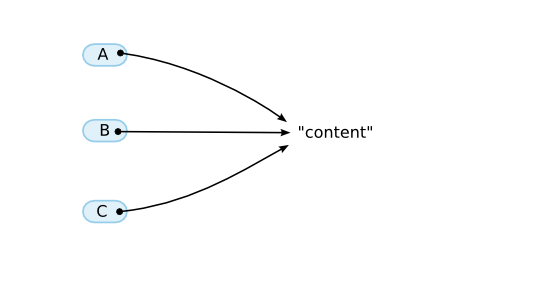
图1: Ruby变量保持对象引用
对了，这里的“局部”是某种程度上的局部，暂且还无法解释它的范围。先要说一下，顶层只是一种“局部”作用域。
变量名以大写字母开头的是常量。因为是常量，只能对它进行一次（第一次）赋值。
Const = "content" PI = 3.1415926535 p(Const) # 显示"content"
再次赋值会造成错误。说实话，只是警告，不是错误。这么做是为了让一些操作Ruby程序本身的应用程序， 比如开发环境，在加载两次文件的时候，不会报错。也就是说，这是为实用而做的妥协，本来应该报错。 实际上，直到1.1版本都会报错。
C = 1 C = 2 # 实际中只是给出警告，理论上应该报错
很多人为“常量”这个词所欺骗，认为常量就是“所指对象一旦被记住，便不再改变”。 实际上，并不是常量所指的对象不再改变。如果用英语表达的话，read only比constant更能表现其意图（图2）。 顺便说一下，另有一个名为freeze的方法用于让对象本身不变。
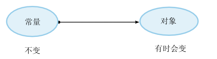
图2: 常量read only的含义
实际上，常量的作用域还没有谈到。在下一节中，我们会结合类来谈一下。
Ruby的控制结构很丰富，单单罗列出来就很困难了。先来谈谈if和while。
if i < 10 then # 主体 end while i < 10 do # 主体 end
对于条件表达式，只有两个对象——false和nil——为假，其余所有对象都是真。0和空字符串也是真。
顺便说一下，当然不会只有false，还有true。它当然是真。
本来在面向对象系统中，方法属于对象。但那完全是理想世界的事。 在普通的程序中，会有大量拥有相同方法集合的程序， 坦率的说，以对象为单位去记忆其所拥有的方法并不是件容易的事。 通常是用类或多方法（multi method）这样的结构来减少方法的重复定义。
在Ruby中，将对象与方法连在一起的机制采用了传统的”类”的概念。 也就是说，所有对象都属于某个类，由类决定可以调用的方法。 这时，就称对象是“某某类的实例（instance）”。
比如，字符串“str”是String类的一个实例。
并且，String类定义了upcase、downcase、strip，以及其它一些方法，
所有字符串对象都可以响应这些方法。
# 因为全都属于字符串类，所以定义了同样的方法
"content".upcase()
"This is a pen.".upcase()
"chapter II".upcase()
"content".length()
"This is a pen.".length()
"chapter II".length()
不过，如果调用的方法没有定义怎么办？静态语言的话，会造成编译错误， 而Ruby则会成为运行时异常。实际试一下。这种长度的程序还是用-e运行比较方便。
% ruby -e '"str".bad_method()' -e:1: undefined method `bad_method' for "str":String (NoMethodError)
如果找不到方法，就会抛出一个名为NoMethodError的错误。
最后，为那个一遍遍说的令人厌烦的“String的upcase方法”准备了一个专用的记法。
“String#upcase”表示“定义在String类中的upcase方法”。
顺便说一下，写成“String.upcase”在Ruby世界里有完全不同的意思。至于是什么意思？
下节分解。
迄今为止，都是已经定义的类。当然，还可以定义自己的类。类可以用class语句定义。
class C end
这里定义了一个新的类C。定义后，可以如下这样用。
class C end c = C.new() # 生成C的实例，赋值给变量c
请注意，生成实例用的不是new C。 敏锐的读者可能注意到了，C.new()的记法像是一个方法调用。 在Ruby中，生成对象的表达式只是一个方法调用。
首先，Ruby的类名与常量名是等价的。那么，与类名同名的常量是什么呢？
实际上，就是这个类。在Ruby中，所有能操作的东西都是对象。类自然也是对象。
这种对象称为类对象。所有的类对象都是Class类的实例。
也就是说，创建新类对象的class语句，其动作是将类对象赋值给一个与类同名的常量。
另一方面，生成实例的操作是，访问这个常量，通过该对象调用方法（通常是new）。
看看下面的例子就可以知道，实例生成同普通的方法调用没有区别。
S = "content" class C end S.upcase() # 得到常量S表示的对象，调用upcase方法 C.new() # 得到常量C表示的对象，调用new方法
正是因为这样，Ruby中没有new这个保留字。
接下来，可以用p将生成的类实例显示出来。
class C end c = C.new() p(c) # #<C:0x2acbd7e4>
不过，它到底无法像字符串和整数那样表示得那么漂亮，显示的是类名和所属的内部ID。 这个ID表示的是指向该对象指针的值。
是的是的，可能你已经完全忘了方法名的记法。
“Object.new”表示通过类对象Object本身调用new方法。
因此，“Object#new”和“Object.new”完全是两码事，需要严格区分。
obj = Object.new() # Object.new obj.new() # Object#new
实际上，Object#new并没有定义，像这个程序的第二行会造成错误。
希望你只把它当作一个例子。
即便定义了类，没有定义方法也是没有意义的。
让我们试着在类C中定义方法。
class C
def myupcase( str )
return str.upcase()
end
end
定义方法用def语句。这个例子中定义了myupcase方法。有一个名为str的参数。
同变量一样，参数和返回值都不需要写类型。而且可以有多个参数。
试着用一下定义的方法。缺省情况下，方法可以在外部调用。
c = C.new()
result = c.myupcase("content")
p(result) # 显示"CONTENT"
当然，习惯之后便无需一个个的赋值了。下面的写法也是一样的。
p(C.new().myupcase("content")) # 同样显示"CONTENT"
self在方法执行过程中，通常会保留自己（方法调用的实例）是谁的信息，这个信息可以通过self得到。
类似于C++或Java中的this。我们来确认一下。
class C
def get_self()
return self
end
end
c = C.new()
p(c) # #<C:0x40274e44>
p(c.get_self()) # #<C:0x40274e44>
如你所见，两个表达式返回的是同样的对象。
可以确认，对c调用方法，其self就是c。
那么，通过自身调用方法该怎么做才好呢？首先要考虑通过self进行调用。
class C
def my_p( obj )
self.real_my_p(obj) # 通过自身调用方法
end
def real_my_p( obj )
p(obj)
end
end
C.new().my_p(1) # 显示1
不过，调用“自己的”方法还要特意指定，太麻烦。
因此，对self的调用可以省略调用方法的目标对象（接收者，receiver）。
class C
def my_p( obj )
real_my_p(obj) # 可以不指定调用的接收者
end
def real_my_p( obj )
p(obj)
end
end
C.new().my_p(1) # 显示1
还有一种说法，对象是数据 + 代码，所以，仅仅定义方法还是没什么用。 有必要以对象为单位来记住数据，也就是实例变量，在C++中称为成员变量。
根据Ruby的变量命名规则，第一个字母决定类型。实例变量是“@”。
class C
def set_i(value)
@i = value
end
def get_i()
return @i
end
end
c = C.new()
c.set_i("ok")
p(c.get_i()) # 显示"ok"
实例变量不同于前面介绍的变量，即便不赋值（甚至不定义）也一样可以访问。 这种情况下会变成怎样呢……接着前面的代码继续尝试。
c = C.new() p(c.get_i()) # 显示nil
没有set就get，结果显示nil。nil表示一个“没有”的对象。
存在对象却“没有”，很不可思议，没办法，它就是这样。
nil也可以作为一个字面量使用。
p(nil) # 显示nil
initialize正如我们看到的，即便是刚刚定义的类也可以调用new方法创建实例。
的确如此，不过，有时需要对一个类进行特定的初始化。
这时要修改的不是new方法，而是一个名为initialize的方法。
它会在new的过程中调用。
class C
def initialize()
@i = "ok"
end
def get_i()
return @i
end
end
c = C.new()
p(c.get_i()) # 显示"ok"
严格说来，这只是new方法的设计，而非语言的设计。
类可以继承自其它类。比如，String类继承自Object类。
在本书中，用图3那样的纵向箭头表示这种关系。
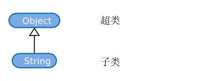
图3: 继承
在这副图中，被继承类（Object）称为超类，继承类（String)称为子类。
请注意，这里的术语不同于C++，而与Java相同。
总之，先试试。我们创建的类也可以继承自其它类。创建继承类（指定超类）要这样写。
class C < SuperClassName end
像迄今为止这样省略超类的写法，隐含着Object就是超类。
为什么需要继承呢？当然是为了继承方法。 继承的运作方式就像在子类中重复定义超类中的方法。 让我们来试试看。
class C
def hello()
return "hello"
end
end
class Sub < C
end
sub = Sub.new()
p(sub.hello()) # 显示"hello"
hello是定义在类C中的方法，Sub的实例也可以调用它。
当然，这里也没有必要赋值给一个变量。
下面这样写也是一样的。
p(Sub.new().hello())
如果定义了同名的方法，就会发生“改写（override）”。C++和Object Pascal（Delphi）通过保留字virtual指明方法改写， 但在Ruby中，所有方法都可以无条件改写。
class C
def hello()
return "Hello"
end
end
class Sub < C
def hello()
return "Hello from Sub"
end
end
p(Sub.new().hello()) # 显示"Hello from Sub"
p(C.new().hello()) # 显示"Hello"
类可以有许多级继承。比如，像图4那样。在这种情况下，
Fixnum继承了Object、Numeric和Integer的全部方法。
方法同名时，优先考虑更近的类的方法。
由于没有根据类型进行重载（overload）之类的东西，一切的条件都变得非常简单。
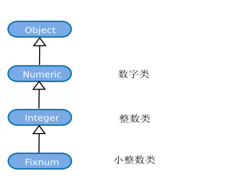
图4: 多级继承
在C++中，可以有什么都不继承的类。而在Ruby中，必然是直接或间接的继承自Object。
总之，如果画出继承关系图，就是一棵以Object为顶点的一棵树。
比如，把内建程序库中重要类的继承关系画成一棵树的话，就像图5的感觉。
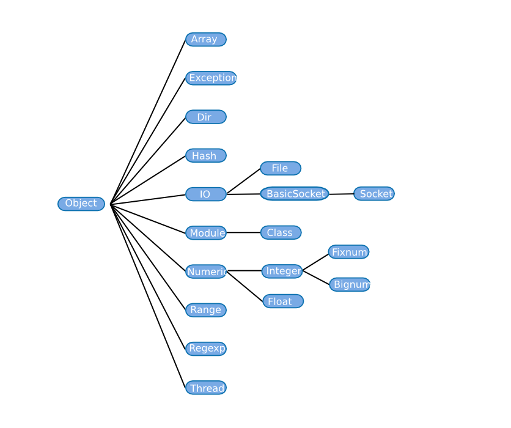
图5: Ruby的类树
超类一旦（定义的时候）确定，之后就无法改变。 也就是说，在类树中增加新的类，其位置是不会改变或删除的。
在Ruby中，变量（实例变量）是不能继承的。 即便可以继承，类中也不会包含这个变量的使用信息。
只有方法可以继承，只要调用继承方法（通过子类实例），就会发生实例变量赋值， 也就是说，将它定义出来。 这样的话，实例变量的命名空间就完全变平，哪个类的方法都可以访问。
class A
def initialize() # 在new的过程中调用
@i = "ok"
end
end
class B < A
def print_i()
p(@i)
end
end
B.new().print_i() # 显示"ok"
如果不能理解这个行为的话，抛开类和继承来考虑就好了。
如果有一个类C的实例obj，首先，类C超类的方法都定义在C中。
当然，要适当考虑一下改写规则。这样，C的方法就附着在obj上了（图6）。
强烈的“实体感”是Ruby面向对象的特征。
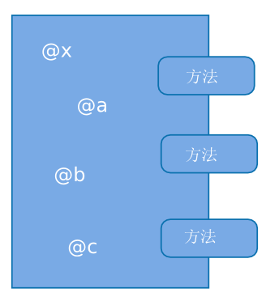
图6: Ruby对象图
只能指定一个超类。看起来Ruby似乎是单一继承。 但是，因为模块的存在让它拥有了与多重继承同等的能力。 下面就来讨论一下模块。
一言以蔽之，模块就是“无法指定超类，无法生成实例”的类。 定义可以这样写。
module M end
这样就定义了模块M。方法定义与类完全相同。
module M
def myupcase( str )
return str.upcase()
end
end
然而它无法直接调用，因此不能创建实例。 那么该怎么用呢？应该由其它类“include”这个模块。 这样一来，就好像类继承自这个模块一样。
module M
def myupcase( str )
return str.upcase()
end
end
class C
include M
end
p(C.new().myupcase("content")) # 显示"CONTENT"
即便类C没有定义myupcase方法也一样可以调用。也就是说，“继承”了模块的方法。
在功能上，include与继承完全相同。方法定义和实例变量的访问也不受什么限制。
前面说过，模块不能指定超类，不过，它可以包含其它模块。
module M end module M2 include M end
也就是说，这在功能上与指定超类相同。只是哪个类在上面并不确定。 只是模块之上只能是模块。
下面是一个包含方法继承的例子。
module OneMore
def method_OneMore()
p("OneMore")
end
end
module M
include OneMore
def method_M()
p("M")
end
end
class C
include M
end
C.new().method_M() # 显示"M"
C.new().method_OneMore() # 显示"OneMore"
如果以类继承的方式来表现的话，就是图7这样。
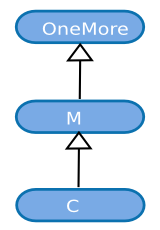
图7: 多重包含
如果类有超类，那么它与模块的关系又是怎样的呢？考虑下面的情况。
# modcls.rb
class Cls
def test()
return "class"
end
end
module Mod
def test()
return "module"
end
end
class C < Cls
include Mod
end
p(C.new().test()) # “class”? “module”?
C继承自Cls，包含了Mod。在这种情况下，究竟是显示"class"还是"module"呢？
也就是说，模块和类哪边更“近”呢？Ruby的事要听Ruby的看法，执行一下。
% ruby modcls.rb "module"
模块似乎比超类的优先级更高。
一般说来，在Ruby中，如果包含了模块的话，就像夹在类和超类“之间”那样的继承。 画出来的话，就像图8一样。
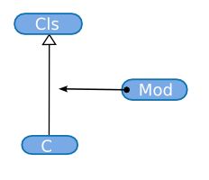
图8: 类与模块的相互关系
如果考虑模块包含模块的情况，就如图9所示。
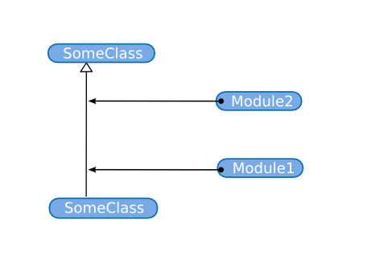
图9: 类与模块的相互关系(2)
注意。这一节非常重要，而且，提到了一些只熟悉静态语言的程序很少接触的元素。 其它的可以随便翻翻，但这里希望你可以仔细阅读。因此，本节也比较详尽。
首先复习一下常量。常量以大写字母开头，可以像下面这样定义。
Const = 3
访问常量可以这样做。
p(Const) # 显示3
实际上，也可以这样写。
p(::Const) # 同样显示3
开头加上::，表示“这是一个定义在顶层的常量”。就像文件系统的路径一样。
假设根目录下有个叫vmunix的文件。在/下只写vmunix就可以访问它。
而在全路径下就要写/vmunix。Const和::Const也是同样的关系。
在顶层下，可以只写Const，也可以按照全路径写::Const。
那么文件系统中的目录在Ruby中相当于什么呢？答案是类定义语句和模块定义语句。 因为分别说两个显得冗长而麻烦，以后都归结为类定义。 如果是在类定义中，那么常量的层次就要会提升（进入目录）。
class SomeClass Const = 3 end p(::SomeClass::Const) # 显示3 p( SomeClass::Const) # 同样显示3
SomeClass是定义在顶层的类，所以，常量仅仅写成SomeClass也可以，写成::SomeClass也可以。
嵌套在类定义中的常量Const是“SomeClass中的常量”，它变成了::SomeClass::Const。
如同在目录中可以创建新目录一样，类中同样可以定义新类。比如这样：
class C # ::C
class C2 # ::C::C2
class C3 # ::C::C2::C3
end
end
end
在类定义中定义的常量必须写全路径吗？当然没有这种事。
等同于文件系统的比喻，在同级的类定义语句“中”，可以不用::。
也就是这样：
class SomeClass Const = 3 p(Const) # 显示3 end
没想到这样吧！在类定义语句中写可执行的程序。 我想，这对于只熟悉静态语言的人来说，相当意外。 我第一次见的时候，也是大吃一惊。
多说几句，当然在方法定义中常量也是可见的。访问规则等同于类定义语句。
class C
Const = "ok"
def test()
p(Const)
end
end
C.new().test() # 显示"ok"
盯住这里所写的全部。在Ruby中，程序的大部分都是“可执行的”。 常量定义、类定义语句、方法定义语句，几乎看到的所有东西都是按顺序执行。
比如，看看下面的代码。迄今为止的结构在这里都用到了。
1: p("first")
2:
3: class C < Object
4: Const = "in C"
5:
6: p(Const)
7:
8: def myupcase(str)
9: return str.upcase()
10: end
11: end
12:
13: p(C.new().myupcase("content"))
这个程序按以下顺序执行。
1: p("first") |
显示"first"。 |
3: < Object |
访问常量Object，得到类对象Object |
3: class C |
以Object为超类生成一个新的类，带入常量C中 |
4: Const = "in C" |
定义::C::Const。其值为"in C" |
6: p(Const) |
显示::C::Const。显示为"in C"。 |
8: def myupcase(...)...end |
定义方法C#myupcase。 |
13: C.new().myupcase(...) |
访问常量C，调用其new，进而调用myupcase。 |
9: return str.upcase() |
返回"CONTENT"。 |
13: p(...) |
显示"CONTENT"。 |
终于要来讨论局部变量的作用域了。
顶层、类定义语句内、模块定义语句内、方法体内，都有各自完全独立的局部变量作用域。
也就是说，下面程序中的Ivar互不相同，互不冲突。
lvar = 'toplevel'
class C
lvar = 'in C'
def method()
lvar = 'in C#method'
end
end
p(lvar) # 显示"toplevel"
module M
lvar = 'in M'
end
p(lvar) # 显示"toplevel"
self之前说过，在方法执行中，可以通过self调用自己（调用方法的对象）。
这话对，但只是一半。其实，Ruby程序执行过程中，到处都设置了self。
就连顶层和类定义语句中都有self。
比如，顶层甚至也有self。顶层的self称为main。
没什么奇怪的，它就是Object的实例。
main仅仅是为了设置self而准备的，没有什么更深层的含义。
因为顶层的self，也就是main，是Object的实例，
所以，即便是在顶层也可以调用Object的方法。
而且Object包含了一个称为Kernel模块，其中定义了“函数风格的方法”，像p、puts。（图10）。
因此，即便在顶层也可以调用p和puts。
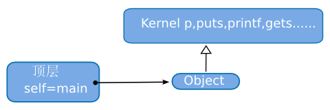
图10: main、Object和Kernel
其实，p不是一个函数，而是一个方法。
只是因为它定义在Kernel中，无论self的类是什么，都就可以像“自己的”方法一样调用。
Ruby中并不存在真正意义的“函数”。有的只是方法。
顺便说一下，函数风格的方法除了p、puts之外，
还有print、puts、printf、sprintf、gets、fork、exec等等，很多名称似曾相似的方法。
看到这里选择的名称，Ruby的性格就不难想象了。
不管在哪里，self都会设置，即便在类定义语句中，这一事实也不会改变。
类定义中的self就那个是类（类对象）。因此会变成这样。
class C p(self) # C end
这个到底有什么用呢？其实这个例子非常有用。是这样。
module M end class C include M end
其实，include是调用对象C的方法。还没有说到，Ruby的方法调用可以省略括号。
类定义的话题还没有结束，为了让它看上去不那么像方法调用，所以，这里去掉了括号。
Ruby对于程序库的加载也全都是在执行时进行的。通常这样写。
require("library_name")
同看到的一样，require是一个方法。根本没有保留字。
这样写的话，就在其所写的地方执行加载，执行就转移到那个程序库（的代码）。
因为Ruby中没有Java中包的概念，如果希望划分程序库名称的名字空间，就将文件分开放置到目录里。
require("somelib/file1")
require("somelib/file2")
程序库中也是使用普通的class语句和module语句定义类和模块。
顶层的常量其作用域是平的，与文件无关，最初在一个文件里定义的类在另一个文件里也可以看见。
为了划分类名的名字空间，可以像下面这样明确的嵌套在模块中。
# net程序库的名字空间划分的例子
module Net
class SMTP
# ...
end
class POP
# ...
end
class HTTP
# ...
end
end
之前，我们以文件系统比喻常量的作用域，不过，希望你从这里开始完全忘记这个比喻。
常量还有很多结构。首先，“外部”的类可以看到常量。
Const = "ok" class C p(Const) # 显示"ok" end
为什么是这样呢？这是为了便于使用模块作为名字空间。怎么回事呢？ 用前面的net程序库作为例子追加说明一下。
module Net
class SMTP
# 使用Net::SMTPHelper的方法
end
class SMTPHelper # Net::SMTP的辅助类
end
end
在这种情况下，SMTP能访问SMTPHelper的话就方便多了。
于是便可以得到“外部类可以访问会很方便”的结论。
无论嵌套多少层，“外部”类都可以访问。 如果多个嵌套层次中都定义了相同的常量名，访问的就是从内向外按顺序找到的第一个。
Const = "far"
class C
Const = "near" # 这个Const比上一个近
class C2
class C3
p(Const) # 显示"near"
end
end
end
此外，常量还有一个查找路径。 一直往外层的类查找常量，如果直到顶层还没找到，就会进一步搜索自己超类的常量。
class A Const = "ok" end class B < A p(Const) # 显示"ok" end
完全没有那么复杂。
总结一下。查找常量的时候，先搜外部类，然后是超类。 比如，虽然另类，但假设有下面这个类层次结构。
class A1
end
class A2 < A1
end
class A3 < A2
class B1
end
class B2 < B1
end
class B3 < B2
class C1
end
class C2 < C1
end
class C3 < C2
p(Const)
end
end
end
在C3中访问常量Const，按照图11的顺序进行查找。
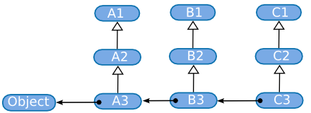
图11: 常量的查找顺序
有一点要注意。完全不会查找外部类的超类，比如A1和B2。
如果向外查找，就是彻底向外的方向，如果查找超类，就纯粹的超类方向。
如果不这样，就会有多条的类查找路径，行为会复杂到难以预测。
之前说过，如果是对象的话，就可以调用其方法。 也说过，对象的类决定了能够调用的方法。那么类对象是否也有个“类”呢？（图12）
图12: 类的类是？
这样的时候，最好在Ruby中实际确认一下。
有一个Object#class方法，它是一个“返回自己所属类（类对象）的方法”。
p("string".class()) # 显示String
p(String.class()) # 显示Class
p(Object.class()) # 显示Class
看来，String属于Class类。那么进一步，Class的类是什么呢？
p(Class.class()) # Class显示
看来还是Class。也就是说，不管什么对象，只要.class().class().class()……，
这样一路下去，一定会得到Class，最后就是一个环（图13）。
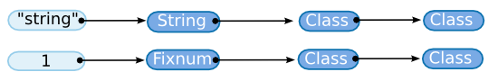
图13: 类的类的类的……
Class是类的类。这种有“某某的某某”的递归结构的东西称为“元（meta）某某”，
Class就是“元类”。
这次的目标变为对象，考虑一下模块。模块也是对象，和类一样，它也应该有个“类”。 试一下。
module M end p(M.class()) # 显示Module
看来，模块对象的类是Module。那么Module的类是什么呢？
p(Module.class()) # Class
还是Class。
这次改变一下方向，调查一下继承关系。Class和Module的超类都是什么呢？
在Ruby中，可以用Class#superclass来检查。
p(Class.superclass()) # Module p(Module.superclass()) # Object p(Object.superclass()) # nil
哎呀！Class居然是Module的子类。根据这些事实，画出Ruby几个重要类之间的关系，
如图14所示。
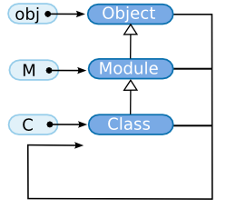
图14: Ruby的重要类之间的关系
迄今位置，没有对用了多次的new和include进行说明，这里终于可以解释一下了。
new实际上是Class类定义的方法。因此，任何类（都是Class的实例）都可以直接使用new。
Module中没有定义new方法，所以，无法创建它的实例。
而Module定义了include方法，所以，模块和类都可以调用include。
Object、Module、Class是支撑Ruby的根基。
这三个对象就可以将Ruby的对象世界本身描述出来。
换句话说，它们是描述对象的对象。所以，Object Module Class是Ruby的“元对象”。
对象可以调用方法。可以调用的方法由对象的类决定。但是理想情况下，方法是属于对象的。 至于类，它的存在是为了省去多次同样方法的时间。
实际上，Ruby有一种机制，可以为对象（实例）单独定义方法，无论它们的类是什么。 这样写。
obj = Object.new()
def obj.my_first()
puts("My first singleton method")
end
obj.my_first() # 显示My first singleton method
众所周知，Object是所有类的超类。
在这么重要的类中，不可能定义一个像my_first名称这样怪异的方法。
obj是Object的实例。但是，obj却可以调用my_first方法。
也就是说，肯定在哪定义了这个与所属类完全没有关系的方法。
这样为某个对象定义的方法称为singleton方法（singleton method）。
什么时候会用到singleton方法呢？首先是定义类似于Java和C++静态方法的时候。 也就是不生成实例也可以调用的方法。 这样的方法在Ruby中表现为类对象的singleton方法。
比如，UNIX中有一个名为unlink的系统调用。它可以从文件系统中删掉一个文件。
在Ruby中，可以通过File类的singleton方法unlink来使用。尝试用一下。
File.unlink("core") # 删除core文件
每次都说“File对象的singleton方法unlink”很麻烦，以后把它写作“File.unlink。
别写成“File#unlink”了，“File.write”表示“File类定义的write方法”。
▼ 方法记法总结
| 记法 | 调用对象 | 调用示例 |
File.unlink |
File类本身 |
File.unlink("core") |
File#write |
File的实例 |
f.write("str") |
类变量是ruby 1.6加入的，是一项比较新的功能。它同常量一样，都属于某个类，
它可以在类和实例中赋值和访问。看看下面的例子。变量名以@@开头的就是类变量。
class C
@@cvar = "ok"
p(@@cvar) # 显示"ok"
def print_cvar()
p(@@cvar)
end
end
C.new().print_cvar() # 显示"ok"
类变量最初的赋值兼有定义的作用，像下面这样在赋值前访问就会造成运行时错误。
虽然前面都有@，但其行为与实例变量完全不同。
% ruby -e ' class C @@cvar end ' -e:3: uninitialized class variable @@cvar in C (NameError)
这里稍微偷了下懒，给了程序一个-e选项。'和'之间的三行是程序。
再有，类变量是可继承的。子类方法可以对超类的类变量进行赋值和访问。
class A
@@cvar = "ok"
end
class B < A
p(@@cvar) # 显示"ok"
def print_cvar()
p(@@cvar)
end
end
B.new().print_cvar() # 显示"ok"
最后，还有全局变量。在程序的任何位置都可以对全局变量进行赋值和访问。
变量名的第一个字符为$的就是全局变量。
$gvar = "global variable" p($gvar) # 显示"global variable"
可以把全局变量看作是实例变量，所有的名称在访问之前就已经定义好了。
也就是说，赋值前的访问会返回nil而不是造成错误。